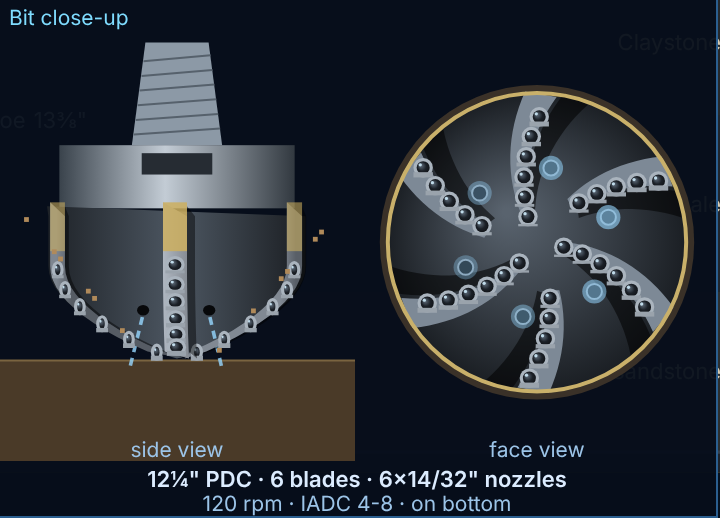

What this guide is. A short reference for every parameter shown in the simulator: what it measures, why the driller watches it, and how to read a change. English on the left, Arabic on the right; technical terms are kept in English in both.
The model. Vertical well (MD = TVD), 13⅜" casing shoe at 2000 m, 12¼" open hole, 12¼" PDC bit with 6×14/32" nozzles, 5½" 21.9 ppf drill pipe and 200 m BHA, three triplex pumps (12" stroke). The equations are standard textbook forms, but coefficients are chosen for training and are not calibrated to a real rig. Use the numbers to learn cause and effect, not for well design.
Units. SI in this guide (m, kN, bar, L/min, sg). The simulator switches to oilfield units (ft, klbf, psi, gpm, ppg) with the Field button. Pressure gradient used: P[bar] = 0.0981 × ρ[sg] × TVD[m].
Language. Use the English / العربية buttons in the toolbar, or open index.html?lang=ar.
ما هو هذا الدليل. مرجع مختصر لكل بارامتر يظهر في المحاكي: ماذا يقيس، ولماذا يراقبه الحفّار، وكيف تفسّر تغيّره. الإنجليزية على اليسار والعربية على اليمين، مع إبقاء المصطلحات التقنية بالإنجليزية.
النموذج. بئر عمودي (MD = TVD)، الـ casing shoe قطر 13⅜" على عمق 2000 m، open hole قطر 12¼"، بت PDC قطر 12¼" مع 6 nozzles 14/32"، drill pipe 5½" 21.9 ppf و BHA بطول 200 m، وثلاث مضخات triplex (شوط 12"). المعادلات بصيغها المعروفة في الكتب، لكن المعاملات مختارة لأغراض التدريب وغير معايَرة على منصة حقيقية. استخدم الأرقام لفهم السبب والنتيجة، لا لتصميم الآبار.
الوحدات. هذا الدليل بوحدات SI (m، kN، bar، L/min، sg). زر Field في المحاكي يحوّل إلى الوحدات الحقلية (ft، klbf، psi، gpm، ppg). تدرّج الضغط المستخدم: P[bar] = 0.0981 × ρ[sg] × TVD[m].
اللغة. استخدم زرّي English / العربية في شريط الأدوات، أو افتح index.html?lang=ar.
| Parameter | Role · how to read it | المهمة · التفسير |
|---|---|---|
| Hole Depthm · MD | Deepest point drilled. Increases only while drilling on bottom. | أعمق نقطة تم حفرها. يزيد فقط أثناء الحفر والبت على القاع. |
| Bit Depthm | Current bit position. Less than Hole Depth = bit off bottom (the difference is the gap). Changes during tripping and connections. | موضع البت الحالي. إذا كان أقل من عمق البئر فالبت فوق القاع والفرق هو المسافة. يتغيّر أثناء الـ tripping والوصلات. |
| Block Positionm above floor | Height of the travelling block. Falls while drilling a stand; at ≈6.9 m the stand is drilled down and a connection is due. Crown-o-matic stops the block near 42.5 m. | ارتفاع الـ travelling block. ينخفض أثناء حفر الـ stand؛ عند ≈6.9 m ينتهي الـ stand ويلزم connection. الـ Crown-o-matic يوقف البلوك قرب 42.5 m. |
| Block Speedm/min · ▲ up ▼ down | Hoisting fast causes swab (lower BHP → possible kick); lowering fast causes surge (higher BHP → possible losses). Swab/surge grows with speed and depth. | الرفع السريع يسبب swab (انخفاض BHP ← احتمال kick)، والإنزال السريع يسبب surge (ارتفاع BHP ← احتمال losses). يزداد الأثر مع السرعة والعمق. |
| Hook LoadkN | HL = W_block + W_string·BF − WOB ± drag, BF = 1 − ρ_mud/7.85. Drop while drilling = more WOB. Extra load when pulling = overpull/drag (pack-off, tight hole). Sudden unexplained loss of weight may mean part of the string is lost. | HL = W_block + W_string·BF − WOB ± drag حيث BF = 1 − ρ_mud/7.85. انخفاضه أثناء الحفر = زيادة WOB. زيادة عند السحب = overpull/drag (pack-off أو تضيّق). فقدان مفاجئ للوزن قد يعني انفصال جزء من الـ string. |
| WOBkN · weight on bit | Modelled from string compression: WOB = (EA/L)·(lowered − drilled), so a drill-off test works. More WOB → higher ROP up to the founder point (≈300 kN here), more torque and faster wear. | يُحسب من انضغاط الـ string: WOB = (EA/L)·(المُنزَل − المحفور) لذلك يعمل اختبار drill-off. زيادته ترفع ROP حتى الـ founder point (≈300 kN هنا)، وترفع العزم والتآكل. |
| ROPm/h · rate of penetration | Depends on WOB, RPM, bit hydraulics (HSI), overbalance, bit wear and rock drillability. A sudden increase (drilling break) with falling overbalance is an early sign of a higher-pressure zone: stop and flow-check. | يعتمد على WOB و RPM وهيدروليكا البت (HSI) والـ overbalance وتآكل البت وقابلية الصخر للحفر. الزيادة المفاجئة (drilling break) مع تناقص الـ overbalance علامة مبكرة على طبقة ضغطها أعلى: أوقف واعمل flow-check. |
| Top Drive RPMrpm | String rotation speed. Raises ROP (exponent 0.6 in the model). RPM falling while torque climbs = stick-slip or a stall at the torque limit. | سرعة دوران الـ string. ترفع ROP (أس 0.6 في النموذج). انخفاض RPM مع ارتفاع العزم = stick-slip أو stall عند حد العزم. |
| Top Drive TorquekN·m | Torque delivered by the motor (bit torque + wall friction). Gradual rise = bit wear or more WOB; sharp erratic rise = pack-off or a hard stringer. At the torque limit rotation stops (stall alarm). | العزم الذي يبذله المحرك (عزم البت + احتكاك الجدار). ارتفاع تدريجي = تآكل البت أو زيادة WOB؛ ارتفاع حاد ومتذبذب = pack-off أو طبقة صلبة. عند حد العزم يتوقف الدوران (إنذار stall). |
| Standpipe Pressure (SPP)bar | Pump pressure at the standpipe = surface + pipe + bit-nozzle + annular friction (+ any hydrostatic imbalance). Rise = plugged nozzle, pack-off or heavier mud in the string. Slow fall = string washout, pump problem, or gas/kick lightening the annulus. | ضغط المضخة عند الـ standpipe = فواقد الاحتكاك (السطح + الأنابيب + nozzles البت + الحلقي) + أي فرق hydrostatic. ارتفاعه = nozzle مسدودة أو pack-off أو طين أثقل داخل الأنبوب. انخفاض تدريجي = washout في الـ string أو مشكلة مضخة أو غاز/kick يخفّف الحلقي. |
| Casing Pressurebar · choke pressure | Annulus pressure at surface. Zero while drilling with the well open. After shut-in it is SICP. Must stay below MAASP. | ضغط الحلقي عند السطح. صفر أثناء الحفر والبئر مفتوح. بعد إغلاق البئر يساوي SICP. يجب أن يبقى أقل من MAASP. |
| Pump Strokesspm (total) | Sum of strokes per minute of the running pumps. Sets the flow: Q = SPM × displacement. | مجموع ضربات المضخات العاملة في الدقيقة. يحدد التدفق: Q = SPM × الإزاحة لكل ضربة. |
| Pump Pressurebar | Discharge pressure ≈ SPP plus a short line loss. If it exceeds the liner rating (5"/5½": 345 bar, 6": 310, 6½": 262) the pop-off relief opens and the pump trips. | ضغط التفريغ ≈ SPP + فاقد خط قصير. إذا تجاوز rating الـ liner (5"/5½": 345 bar، 6": 310، 6½": 262) يفتح الـ pop-off relief وتتوقف المضخة. |
| Mud Flow InL/min | Flow pumped into the string, from strokes × displacement × volumetric efficiency. | التدفق المضخوخ داخل الـ string = الضربات × الإزاحة × الكفاءة الحجمية. |
| Mud Flow OutL/min · flowline sensor | Return flow. Flow out > flow in is the first and most important kick sign. Flow out < flow in = losses. Flow with pumps off = well flowing. | تدفق الراجع. التدفق الخارج > الداخل هو أول وأهم علامة kick. الخارج < الداخل = losses. تدفق والمضخات متوقفة = البئر يتدفق. |
| Mud Pit Volumem³ | Active-system volume at surface. | حجم نظام الطين الفعّال على السطح. |
| Pit Gain / Lossm³ since last zero | Gain (+) = influx (kick) unless mud was added; loss (−) = losses or transfers. Together with flow out, the key kick indicator. Zero it after any planned transfer. | الزيادة (+) = تدفق من التكوين (kick) ما لم يُضف طين؛ النقص (−) = losses أو نقل. مع التدفق الخارج هو المؤشر الرئيسي للـ kick. صفّره بعد أي نقل مخطط. |
| Differential Pressurebar · model definition | Here: measured SPP minus the expected clean-hole SPP. Positive = restriction (pack-off, plugged nozzle); negative = washout or gas in the annulus. (On rigs with a mud motor, “differential” usually means motor ΔP; there is no motor in this model.) | هنا: SPP المقاس ناقص SPP المتوقع لبئر نظيف. موجب = انسداد (pack-off، nozzle مسدودة)؛ سالب = washout أو غاز في الحلقي. (في المنصات التي تستخدم mud motor يُقصد به عادةً ΔP المحرك؛ لا يوجد motor في هذا النموذج.) |
| Rotary TorquekN·m | Torque transmitted to the string (bit + drag), slightly below the motor torque. | العزم المنقول إلى الـ string (البت + الاحتكاك)، أقل قليلاً من عزم المحرك. |
| ECD @ bitsg | Equivalent circulating density: ECD = BHP / (0.0981·TVD) = MW + annular friction + cuttings load. Must stay inside the pressure window: above pore pressure, below fracture gradient. | الكثافة المكافئة أثناء التدوير: ECD = BHP / (0.0981·TVD) = MW + احتكاك الحلقي + حمل الـ cuttings. يجب أن تبقى داخل نافذة الضغط: فوق ضغط المسام وتحت تدرّج التكسير. |
| Gasunits (relative) | Gas detector reading on the returns. Background gas, connection gas and trip gas are normal peaks; a steady rise means underbalance or gas approaching surface. | قراءة كاشف الغاز في الطين الراجع. الـ background وconnection gas وtrip gas قمم طبيعية؛ الارتفاع المستمر يعني underbalance أو اقتراب الغاز من السطح. |
| Parameter | Role · how to read it | المهمة · التفسير |
|---|---|---|
| Pump displacementL/stroke | Triplex: V = 3·(π/4)·D²·L·η. 5½" liner, 12" stroke, η = 0.95 → 13.3 L/stk. A bigger liner gives more flow per stroke but a lower pressure rating. | مضخة triplex: V = 3·(π/4)·D²·L·η. liner 5½" وشوط 12" و η = 0.95 ← 13.3 L/ضربة. الـ liner الأكبر يعطي تدفقاً أكبر لكل ضربة لكن rating ضغط أقل. |
| Pipe velocity (vp)m/s | vp = Q / A_pipe. Fast (≈5.5 m/s at 3800 L/min). Sets the surface-to-bit time and the pipe friction; it does not clean the hole. | vp = Q / A_pipe. سريعة (≈5.5 m/s عند 3800 L/min). تحدد زمن الوصول من السطح إلى البت واحتكاك الأنبوب، ولا تنظّف البئر. |
| Annular velocity (va)m/min | va = Q / [(π/4)(D_hole² − D_pipe²)]. The main driver of cuttings transport. Judge it against the slip velocity through the transport ratio, not alone. | va = Q / [(π/4)(D_hole² − D_pipe²)]. العامل الرئيسي لنقل الـ cuttings. تُقيَّم مقابل سرعة الانزلاق عبر نسبة النقل، وليس وحدها. |
| Nozzle jet velocity (vn)m/s | vn = Q / TFA, TFA = 6×14/32" = 0.902 in². Higher vn → more hydraulic energy at the bit face (HSI): cleaner cutters, less balling, higher ROP. | vn = Q / TFA حيث TFA = 6×14/32" = 0.902 in². زيادة vn ← طاقة هيدروليكية أكبر على وجه البت (HSI): cutters أنظف، تكتّل أقل (balling)، و ROP أعلى. |
| Apparent viscosity (annulus)cP | Bingham-plastic annulus: μa = PV + 5·YP·(D_hole − D_pipe)/va (cP, lbf/100 ft², in, ft/s). Low flow → high μa, which slows the cuttings' fall. | للحلقي بنموذج Bingham: μa = PV + 5·YP·(D_hole − D_pipe)/va (cP، lbf/100 ft²، in، ft/s). التدفق المنخفض ← μa مرتفعة تبطئ سقوط الـ cuttings. |
| Cuttings slip velocity (vs)m/min · Moore | Settling velocity of a cutting relative to the mud (Moore correlation; cutting 0.25 in, 2.6 sg). Particle Reynolds number picks the regime: laminar vs = 82.87·ds²·Δρ/μa, intermediate vs = 2.90·ds·Δρ^0.667/(ρf^0.333·μa^0.333), turbulent vs = 1.54·√(ds·Δρ/ρf) (ft/s, in, ppg, cP). | سرعة هبوط الـ cutting نسبةً إلى الطين (معادلة Moore؛ cutting قطره 0.25 in وكثافته 2.6 sg). رقم Reynolds للجسيم يحدد النظام: laminar vs = 82.87·ds²·Δρ/μa، وسطي vs = 2.90·ds·Δρ^0.667/(ρf^0.333·μa^0.333)، turbulent vs = 1.54·√(ds·Δρ/ρf) (ft/s، in، ppg، cP). |
| Transport ratio (Ft)% | Ft = 1 − vs/va: the fraction of the mud velocity the cuttings actually achieve. Common rule of thumb: Ft ≥ 0.5 acceptable; higher is better. Verdict bands used here: < 0.5 poor, 0.5–0.7 marginal, ≥ 0.7 good. | Ft = 1 − vs/va: نسبة سرعة الطين التي تحققها الـ cuttings فعلاً. قاعدة إبهام شائعة: Ft ≥ 0.5 مقبول، والأعلى أفضل. حدود التقييم هنا: < 0.5 ضعيف، 0.5–0.7 حدّي، ≥ 0.7 جيد. |
| Cuttings concentration (Ca)% by volume | Ca = Qc / (Qc + Q·Ft), Qc = ROP × bit area. High Ca raises ECD and risks pack-off. Rule of thumb used here: < 3 % good, 3–5 % marginal, > 5 % poor. Fix with more flow, lower ROP, or circulating clean. | Ca = Qc / (Qc + Q·Ft) حيث Qc = ROP × مساحة البت. Ca المرتفع يرفع الـ ECD ويخاطر بـ pack-off. قاعدة الإبهام هنا: < 3 % جيد، 3–5 % حدّي، > 5 % ضعيف. العلاج: تدفق أعلى، أو ROP أقل، أو التدوير حتى ينظف البئر. |
| Hole cleaning verdict | GOOD / MARGINAL / POOR from the Ft and Ca limits above. The POOR HOLE CLEANING advisory alarm fires after 30 s of Ca > 5 % or Ft < 0.5 while drilling. | جيد / حدّي / ضعيف حسب حدود Ft و Ca أعلاه. يعمل الإنذار الاستشاري POOR HOLE CLEANING بعد 30 ثانية من Ca > 5 % أو Ft < 0.5 أثناء الحفر. |
| Surface → bitstrokes · min | (string volume + 4 m³ surface lines) / displacement. Strokes are the field measure because they do not depend on pump rate. Used in the kill sheet: kill mud reaches the bit after this many strokes. | (حجم الـ string + 4 m³ خطوط سطحية) / الإزاحة. الضربات هي المقياس الحقلي لأنها لا تعتمد على معدل الضخ. تُستخدم في الـ kill sheet: يصل طين القتل إلى البت بعد هذا العدد من الضربات. |
| Bottoms-upstrokes · min | Annular volume (bit → surface) / displacement: the strokes needed to bring bottom mud to surface. Typical use: circulate bottoms-up before tripping, after a drilling break, or to see a gas peak. | الحجم الحلقي (من البت إلى السطح) / الإزاحة: الضربات اللازمة لإيصال طين القاع إلى السطح. الاستخدام: تدوير bottoms-up قبل الـ trip، أو بعد drilling break، أو لرصد قمة غاز. |
| Full circulationstrokes · min | Surface → bit + bottoms-up. One complete circuit of the hole volume. | السطح ← البت + bottoms-up. دورة كاملة لحجم البئر. |
| Cuttings lag timemin | bit depth / (va − vs). Cuttings travel slower than the mud, so their lag is longer than the bottoms-up time. | عمق البت / (va − vs). الـ cuttings أبطأ من الطين، لذا زمن تأخرها أطول من زمن الـ bottoms-up. |
| Lag depthm · formation | The depth the cuttings now on the shakers were drilled at. The mud logger uses it to assign samples and gas peaks to the correct depth. | العمق الذي حُفرت منه الـ cuttings الموجودة الآن على الـ shakers. يستخدمه الـ mud logger لنسب العينات وقمم الغاز إلى عمقها الصحيح. |
| Cuttings over shakers · in annulusL/min · m³ | Rock arriving at surface, and rock still in the hole. With pumps off the cuttings stop rising and slowly settle. | الصخر الواصل إلى السطح، والصخر الباقي في البئر. عند إيقاف المضخات تتوقف الـ cuttings عن الصعود وتهبط ببطء. |
| Tracer (lag test) | Inject tracer adds a marker at the pump suction (on rigs: calcium carbide → acetylene seen by the gas detector). Compare actual strokes with calculated. Actual > calculated means the open hole is enlarged (washout). Here the hole is in gauge, so they agree. | احقن tracer يضيف علامة عند سحب المضخة (في المنصات: calcium carbide ← أسيتيلين يرصده كاشف الغاز). قارن الضربات الفعلية بالمحسوبة. الفعلي > المحسوب يعني أن الـ open hole متّسع (washout). هنا البئر بقطره الاسمي فيتطابقان. |
| Bottoms-up count | Starts a stroke counter against the calculated bottoms-up strokes; the event log reports completion. | يبدأ عداد ضربات مقابل ضربات الـ bottoms-up المحسوبة، ويسجّل الحدث عند الاكتمال. |

What it is. A fixed-cutter bit with no moving parts. Each cutter is a disc of synthetic polycrystalline diamond sintered onto a tungsten-carbide substrate. Common cutter sizes are 13, 16 and 19 mm. The cutters are brazed into blades on a steel or tungsten-carbide-matrix body.
How it drills. The cutters shear the rock, like a plane on wood. Roller-cone bits crush the rock instead, and impregnated diamond bits grind it. Shearing is efficient in soft-to-medium-hard, non-abrasive rock, so PDC bits give high ROP at moderate WOB.
Parts shown in the close-up.
Design trade-off. Fewer blades and larger cutters are more aggressive and drill faster in soft rock. More blades and smaller cutters are more durable in harder rock.
Wear. Cutters wear flat (and can chip or break on hard stringers and with vibration). Frictional heat also damages the diamond table. This is one reason the mud flow must cool the bit. In the model, wear rises with RPM, WOB and rock abrasiveness. It is shown as one IADC cutting-structure grade, 0 (new) to 8 (worn out). The real IADC dull grade has eight fields: inner and outer rows, dull characteristic, location, bearing, gauge, other, and reason pulled.
Signs of a worn PDC. ROP falls at the same WOB and RPM, MSE rises, and torque rises. Consider a trip when MSE keeps climbing and the formation has not changed.
Other diamond bits. Impregnated bits have diamond grit dispersed in the matrix. They grind very hard, abrasive rock at high RPM (often on turbines). Natural-diamond bits are older and rarely used now.
ما هو. بت ذو قواطع ثابتة (fixed cutter) بلا أجزاء متحركة. كل قاطع (cutter) قرص من الماس الصناعي المتعدد البلورات مُلبَّد على قاعدة من كربيد التنغستن. أقطار القواطع الشائعة 13 و16 و19 mm. القواطع ملحومة على شفرات (blades) فوق جسم من الفولاذ أو من matrix كربيد التنغستن.
كيف يحفر. القواطع تقصّ الصخر (shearing) كما تقصّ الفارة الخشب. أما بتات الـ roller-cone فتسحق الصخر، والبتات الماسية المشرّبة (impregnated) تطحنه. القصّ فعّال في الصخور الطرية إلى متوسطة الصلابة غير الكاشطة، لذلك يعطي بت الـ PDC معدل ROP عالياً بـ WOB معتدل.
الأجزاء الظاهرة في المنظر المقرّب.
موازنة التصميم. عدد شفرات أقل وقواطع أكبر = بت أكثر عدوانية وأسرع في الصخر الطري. شفرات أكثر وقواطع أصغر = متانة أعلى في الصخر الأصلب.
التآكل. القواطع تتآكل بسطح مستوٍ (wear flat)، وقد تتشظّى أو تنكسر عند الطبقات الصلبة ومع الاهتزاز. الحرارة الناتجة عن الاحتكاك تتلف طبقة الماس أيضاً، وهذا أحد أسباب ضرورة تبريد البت بتدفق الطين. في النموذج يزيد التآكل مع RPM و WOB وكاشطية الصخر، ويُعرض كدرجة IADC واحدة لبنية القطع من 0 (جديد) إلى 8 (مستهلك). أما تقييم IADC الحقيقي فيتكون من ثمانية حقول: الصفوف الداخلية والخارجية، وخاصية التآكل، والموقع، والـ bearing، والـ gauge، وملاحظات أخرى، وسبب السحب.
علامات بت PDC متآكل. انخفاض ROP عند نفس WOB و RPM، مع ارتفاع MSE وارتفاع العزم. فكّر في الـ trip عندما يستمر MSE بالارتفاع دون تغيّر في التكوين.
بتات ماسية أخرى. بتات impregnated: حبيبات ماس موزّعة داخل الـ matrix، تطحن الصخور شديدة الصلابة والكاشطة بسرعة دوران عالية (غالباً مع turbine). بتات الماس الطبيعي أقدم ونادرة الاستخدام اليوم.
Cutter temperatures above roughly 700–750 °C are commonly cited as the onset of thermal degradation of the cobalt-bonded diamond table. Treat this as an approximate figure. · تُذكر عادةً درجات حرارة تتجاوز تقريباً 700–750 °C عند حافة القاطع كبداية للتدهور الحراري لطبقة الماس المرتبطة بالكوبالت. تعامل معها كقيمة تقريبية.
| Control | What it does | وظيفته |
|---|---|---|
| Auto-Driller · WOB mode | Lowers the block to hold the WOB setpoint (PI controller). With ROP cap on, WOB is reduced if ROP exceeds the ROP target. | يُنزل البلوك ليثبّت WOB عند القيمة المطلوبة (متحكم PI). مع تفعيل ROP cap يُخفَّض WOB إذا تجاوز ROP القيمة المستهدفة. |
| Auto-Driller · ROP mode | Adjusts WOB (up to the WOB limit) to reach the ROP target. | يعدّل WOB (حتى حد WOB) للوصول إلى ROP المستهدف. |
| WOB / Torque / RPM limits | Protect the bit and string. Near the torque limit the controller backs off WOB (state TORQUE LIMIT); above it the top drive stalls. | تحمي البت والـ string. قرب حد العزم يقلّل المتحكم WOB (الحالة TORQUE LIMIT)، وفوقه يتوقف الـ top drive (stall). |
| Auto connection | 12-step stand connection at stand end: stop rotation and pick up, flow-check with pumps off, set slips, break out, raise the top drive, latch the stand, make up, pick up, pull slips, start pumps, start rotation, run to bottom. | وصلة stand آلية من 12 خطوة عند نهاية الـ stand: إيقاف الدوران والرفع، ثم flow-check والمضخات متوقفة، ثم وضع الـ slips، فكّ الوصلة، رفع الـ top drive، التقاط الـ stand، ربط الوصلة، الرفع، سحب الـ slips، تشغيل المضخات، بدء الدوران، النزول إلى القاع. |
| Top drive modes | DRILL: speed control with torque limit. SPIN: fast, low torque, to spin in a connection. TORQUE: low speed, fixed torque, to make up or break out. | DRILL: تحكم بالسرعة مع حد للعزم. SPIN: سرعة عالية وعزم منخفض للفّ الوصلة. TORQUE: سرعة منخفضة وعزم ثابت لشدّ الوصلة أو فكّها. |
| Drawworks · jog · brake | Hold Hoist/Lower (or ↑/↓ keys) to move the block at the jog speed; Space stops it. In Auto the brake sets 2 s after the block stops; in Manual the driller sets or releases it. | اضغط باستمرار رفع/إنزال (أو ↑/↓) لتحريك البلوك بسرعة الـ jog، و Space يوقفه. في الوضع الآلي تُثبَّت الفرامل بعد 2 ثانية من توقف البلوك؛ في اليدوي يثبّتها الحفّار أو يحرّرها. |
| Mud pumps · SPM · liner | Each pump: on/off, SPM (0–130), liner size. Flow = sum of the pumps. Start pumps gradually after connections to avoid pressure surges. | لكل مضخة: تشغيل/إيقاف، SPM (0–130)، قطر الـ liner. التدفق = مجموع المضخات. شغّل المضخات تدريجياً بعد الوصلات لتجنب قفزات الضغط. |
| Mud system | MW setpoint + Mixing weights the pit gradually. New mud reaches the bit only after the string volume is displaced. Hole fill uses the trip tank while tripping. LCM pill reduces losses to the weak zone. | MW المطلوب + الخلط يثقّل الحوض تدريجياً. لا يصل الطين الجديد إلى البت إلا بعد إزاحة حجم الـ string. ملء البئر يستخدم الـ trip tank أثناء الـ tripping. LCM pill تقلّل الفقد إلى الطبقة الضعيفة. |
| Item | Meaning · formula | المعنى · المعادلة |
|---|---|---|
| SIDPP | Shut-in drill-pipe pressure: how much the formation pressure exceeds the mud column inside the string. Pp = SIDPP + 0.0981·MW·TVD. | ضغط الـ drill pipe بعد الإغلاق: مقدار زيادة ضغط التكوين على عمود الطين داخل الـ string. Pp = SIDPP + 0.0981·MW·TVD. |
| SICP | Shut-in casing pressure. Normally higher than SIDPP because the influx (lighter) is in the annulus. Gas migrating up with the well shut in raises both. | ضغط الـ casing بعد الإغلاق. عادةً أعلى من SIDPP لأن الدفق (الأخف) موجود في الحلقي. صعود الغاز والبئر مغلق يرفع الضغطين معاً. |
| Pit gain at shut-in | Influx volume. A larger gain means a longer influx column and a higher SICP. | حجم الدفق. كلما زاد كان عمود الدفق أطول و SICP أعلى. |
| KMW | KMW = MW + SIDPP / (0.0981·TVD) [sg, bar, m]. The mud weight that balances formation pressure (trip margin not included). | KMW = MW + SIDPP / (0.0981·TVD) [sg، bar، m]. وزن الطين الذي يوازن ضغط التكوين (دون إضافة trip margin). |
| SCR | Slow circulating rate pressure: pump pressure at a low, pre-recorded rate (e.g. one pump at 30–40 spm). It is the friction part of the kill pressures. | ضغط التدوير البطيء: ضغط المضخة عند معدل منخفض مسجّل مسبقاً (مثلاً مضخة واحدة 30–40 spm). يمثّل جزء الاحتكاك في ضغوط القتل. |
| ICP · FCP | ICP = SIDPP + P_SCR: drill-pipe pressure at the start of the kill. FCP = P_SCR × KMW / MW: drill-pipe pressure once kill mud reaches the bit. DPP falls from ICP to FCP over the surface-to-bit strokes. | ICP = SIDPP + P_SCR: ضغط الـ drill pipe عند بدء القتل. FCP = P_SCR × KMW / MW: ضغط الـ drill pipe عندما يصل طين القتل إلى البت. ينخفض DPP من ICP إلى FCP خلال ضربات السطح ← البت. |
| MAASP | (FG_shoe − MW)·0.0981·TVD_shoe. The maximum surface annulus pressure before the shoe fractures. It drops when MW increases. | (FG_shoe − MW)·0.0981·TVD_shoe. أقصى ضغط سطحي في الحلقي قبل تكسّر الـ shoe. ينخفض عند زيادة MW. |
| Choke · Auto-choke | Adjustable restriction on the returns while circulating with the BOP closed. Auto-choke holds the drill-pipe pressure at the DPP target, so BHP stays constant. | خانق قابل للتعديل على الراجع أثناء التدوير والـ BOP مغلق. الـ Auto-choke يثبّت ضغط الـ drill pipe عند هدف DPP فيبقى BHP ثابتاً. |
| BOP · accumulator | Annular (≈28 s to close), pipe rams (≈10 s), blind/shear rams (arm, then fire: cuts the pipe), HCR (opens the choke line), kill line. Closing uses accumulator fluid; low accumulator pressure slows closing. | الـ Annular (≈28 ثانية للإغلاق)، الـ pipe rams (≈10 ثوانٍ)، الـ blind/shear rams (تسليح ثم إطلاق: يقطع الأنبوب)، الـ HCR (يفتح خط الـ choke)، الـ kill line. الإغلاق يستهلك سائل الـ accumulator؛ وانخفاض ضغطه يبطئ الإغلاق. |
| Parameter | Role · how to read it | المهمة · التفسير |
|---|---|---|
| Bit ΔPbar | ΔP_bit = ρ·Q² / (2·Cd²·TFA²), Cd = 0.95. Pressure spent at the nozzles. A sudden rise = plugged nozzle. | ΔP_bit = ρ·Q² / (2·Cd²·TFA²) حيث Cd = 0.95. الضغط المستهلك عند الـ nozzles. ارتفاع مفاجئ = nozzle مسدودة. |
| HSIhp/in² | Hydraulic horsepower per square inch of bit area: ΔP_bit·Q / A_bit. More HSI → better bit-face cleaning (ROP factor in the model). | القدرة الهيدروليكية لكل بوصة مربعة من مساحة البت: ΔP_bit·Q / A_bit. زيادتها ← تنظيف أفضل لوجه البت (عامل في ROP بالنموذج). |
| Annular frictionbar | Friction pressure loss in the annulus (Bingham effective viscosity; laminar 64/Re or Blasius turbulent). It is the difference between ECD and MW. | فاقد ضغط الاحتكاك في الحلقي (لزوجة Bingham فعّالة؛ laminar 64/Re أو Blasius للمضطرب). هو الفرق بين الـ ECD والـ MW. |
| SPP expected (clean) | SPP calculated for a clean hole with nominal nozzles. Compare with measured SPP to find washouts (lower) and restrictions (higher). | SPP محسوب لبئر نظيف و nozzles اسمية. قارنه بالـ SPP المقاس لاكتشاف الـ washout (أقل) أو الانسداد (أعلى). |
| BHP · Overbalancebar | BHP = hydrostatic + annular friction + cuttings + casing pressure ± swab/surge − gas effect. Overbalance = BHP − Pp. Negative overbalance → influx from permeable zones. | BHP = الهيدروستاتيكي + احتكاك الحلقي + الـ cuttings + ضغط الـ casing ± swab/surge − أثر الغاز. الـ Overbalance = BHP − Pp. القيمة السالبة ← دفق من الطبقات النفّاذة. |
| MSEMPa | Mechanical specific energy (Teale, 1965): MSE = WOB/A + 2π·N·T/(A·ROP). Energy per volume of rock. A steady rise in the same formation means an inefficient bit: wear, balling or vibration. | الطاقة النوعية الميكانيكية (Teale، 1965): MSE = WOB/A + 2π·N·T/(A·ROP). الطاقة لكل حجم من الصخر. ارتفاعها المستمر في نفس التكوين يعني بت غير فعّال: تآكل أو balling أو اهتزاز. |
| d-exponent (dxc) | d = log(R/60N) / log(12W/10⁶D) (R ft/h, N rpm, W lbf, D in) [Jorden & Shirley 1966]; corrected dxc = d·(ρ_normal/ECD), ρ_normal = 1.03 sg [Rehm & McClendon 1971]. In shale, dxc normally increases with depth; a reversal (decreasing trend) suggests a transition into overpressure. | d = log(R/60N) / log(12W/10⁶D) (R ft/h، N rpm، W lbf، D in) [Jorden & Shirley 1966]؛ المصحَّح dxc = d·(ρ_normal/ECD) و ρ_normal = 1.03 sg [Rehm & McClendon 1971]. في الطفل يزداد dxc طبيعياً مع العمق؛ انعكاس الاتجاه (تناقص) يشير إلى الدخول في منطقة ضغط عالٍ. |
| Pressure window | EMW versus depth: pore pressure (prognosis dashed, actual solid), fracture gradient, MW and ECD. Keep MW above pore pressure and ECD below the fracture gradient (at the shoe and at the bottom). | EMW مقابل العمق: ضغط المسام (المتوقع متقطع والفعلي متصل)، وتدرّج التكسير، و MW و ECD. أبقِ MW فوق ضغط المسام و ECD تحت تدرّج التكسير (عند الـ shoe وعند القاع). |
| PV · YP | Bingham plastic viscosity (cP) and yield point (lbf/100 ft²). Both rise with MW in the model. YP helps carry cuttings; PV mostly adds friction (ECD, SPP). | اللزوجة البلاستيكية (cP) ونقطة الخضوع (lbf/100 ft²) بنموذج Bingham. ترتفعان مع MW في النموذج. الـ YP يساعد على حمل الـ cuttings، والـ PV يضيف احتكاكاً في الغالب (ECD و SPP). |
| Alarm | Likely cause → first action | السبب المحتمل ← الإجراء الأول |
|---|---|---|
| 1 FLOW OUT > FLOW IN · PIT GAIN · WELL FLOWING | Influx (kick) → space out, stop pumps, flow-check, shut in. | دفق (kick) ← space-out، أوقف المضخات، flow-check، أغلق البئر. |
| 1 HIGH CASING PRESSURE | Casing pressure near MAASP → choke management; avoid breaking down the shoe. | ضغط الـ casing قريب من MAASP ← إدارة الـ choke وتجنّب تكسير الـ shoe. |
| 1 TOP DRIVE STALLED | Torque at the limit → pick up off bottom, reduce WOB, check for pack-off. | العزم عند الحد ← ارفع عن القاع، قلّل WOB، تحقق من pack-off. |
| 2 HIGH / LOW STANDPIPE PRESSURE | High: plugged nozzle or pack-off. Low: washout or pump fault → compare with expected SPP and pump strokes. | مرتفع: nozzle مسدودة أو pack-off. منخفض: washout أو عطل مضخة ← قارن بالـ SPP المتوقع وضربات المضخات. |
| 2 OVERPULL · HIGH HOOK LOAD | Drag or tight hole → stop, work the pipe, circulate; do not pull through. | احتكاك أو تضيّق ← توقّف، حرّك الأنبوب، دوّر؛ لا تسحب بالقوة. |
| 2 PIT LOSS · 3 LOW MUD FLOW | Losses → reduce rate and ECD, pump an LCM pill, watch the well. | Losses ← خفّض المعدل والـ ECD، اضخ LCM pill، راقب البئر. |
| 2 HIGH GAS | Gas in returns → check overbalance and connection/trip gas; consider weighting up. | غاز في الراجع ← تحقق من الـ overbalance ومن connection/trip gas؛ فكّر في زيادة الوزن. |
| 2 MUD PUMP RELIEF · 3 PUMP FAULT | Over-pressure trip or low volumetric efficiency → check the liner rating, valves and liners. | فصل بسبب ضغط زائد أو كفاءة حجمية منخفضة ← تحقق من rating الـ liner والصمامات والـ liners. |
| 2 LOW ACCUMULATOR · ROTATING WITH BOP CLOSED | BOP readiness / misuse → recharge and fix the leak; stop rotation and pipe movement. | جاهزية الـ BOP / سوء الاستخدام ← أعد الشحن وأصلح التسريب؛ أوقف الدوران وحركة الأنبوب. |
| 3 POOR HOLE CLEANING | Ca > 5 % or Ft < 0.5 while drilling → raise flow, control ROP, circulate bottoms-up. | Ca > 5 % أو Ft < 0.5 أثناء الحفر ← ارفع التدفق، تحكّم بالـ ROP، دوّر bottoms-up. |
| 3 BIT WORN · STAND DRILLED DOWN | Wear grade > 6.8/8 → plan a trip. Stand end → make a connection. | درجة التآكل > 6.8/8 ← خطط للـ trip. نهاية الـ stand ← اعمل connection. |
| Scenario | Signature | العلامات |
|---|---|---|
| Kick | Flow out ↑, pit gain ↑, gas ↑, SPP slowly ↓; after shut-in, SICP > SIDPP. | تدفق خارج ↑، زيادة الحوض ↑، غاز ↑، SPP ↓ ببطء؛ بعد الإغلاق SICP > SIDPP. |
| Lost circulation | Flow out ↓, pit loss, SPP slightly ↓. | تدفق خارج ↓، نقص الحوض، SPP ↓ قليلاً. |
| Pack-off | SPP ↑, torque ↑ and erratic, overpull, flow out ↓, ROP ↓. | SPP ↑، عزم ↑ ومتذبذب، overpull، تدفق خارج ↓، ROP ↓. |
| String washout | SPP falls slowly at a constant rate; differential pressure negative; HSI ↓. | SPP ينخفض ببطء عند معدل ثابت؛ الضغط التفاضلي سالب؛ HSI ↓. |
| Plugged nozzle | Step rise in SPP and bit ΔP; possible pop-off. | قفزة في SPP و ΔP البت؛ قد يفتح الـ pop-off. |
| Pump failure | That pump's efficiency ↓ → less flow and SPP at the same SPM. | كفاءة تلك المضخة ↓ ← تدفق و SPP أقل عند نفس الـ SPM. |
| Accelerated bit wear | ROP ↓ and MSE ↑ at constant WOB/RPM; wear flats grow in the PDC close-up. | ROP ↓ و MSE ↑ عند ثبات WOB/RPM؛ تكبر الـ wear flats في المنظر المقرّب للـ PDC. |
| Geohazards | Gas sand 3215–3250 m with pore pressure 1.30 sg (prognosis 1.24); vugular limestone 3480–3495 m with losses. With MW 1.20 sg you will take a kick unless you weight up in time. | رمل غازي بين 3215–3250 m بضغط مسام 1.30 sg (المتوقع 1.24)؛ حجر جيري كهفي بين 3480–3495 m مع losses. بوزن طين 1.20 sg ستحدث kick ما لم تزد الوزن في الوقت المناسب. |
Simulator values come from a simplified training model and are not calibrated to any specific rig, bit or formation. · قيم المحاكي من نموذج تدريبي مبسّط وغير معايَرة على منصة أو بت أو تكوين محدد.